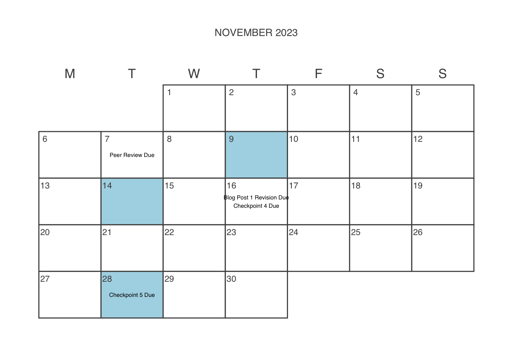

Schedule
Styling and infrastructure for this page inspired by related syllabi produced by Ben Baumer and R. Jordan Crouser.
All readings for this course will be available in our course Perusall, which is linked in Moodle. I encourage you to complete the readings there so that you can leave comments and questions as they come up.


September 07, 2023
Introductions
Fill out the First Day of Class Questionnaire
September 12, 2023
Situating Data
D’Ignazio, Catherine and Lauren Klein (2020). “3. On Rational, Scientific, Objective Viewpoints from Mythical, Imaginary, Impossible Standpoints”. In: Data Feminism. MIT Press. (Visited on Aug. 24, 2021).
TechCrunch (2021). Tackling Deep-Seated Bias in Tech with Haben Girma, Mutale Nkonde and Safiya Noble. (Visited on Sep. 01, 2021).
Fill out the Trigger Warnings Questionnaire in Moodle.
Install Desktop version of Slack and configure notifications for our course.
Create and Share Labor Log
Sign up for notetaking or leading a class opening check-in
September 14, 2023
Lab: Fundamentals of Data
Acknowledge that you’ve read and understand the grading contract by completing the Grading Contract Acknowledgement in Moodle
Start working on Checkpoint 1
September 19, 2023
Data Definitions and Counting
Martin, Aryn and Michael Lynch (2009). “Counting Things and People: The Practices and Politics of Counting”. In: Social Problems 56.2, pp. 243-266. (Visited on Aug. 26, 2019).
Ducharme, Jamie and Arpita Aneja (2020). Why It’s So Hard to Calculate Death Tolls From Hurricanes. (Visited on Sep. 03, 2020).
Rangarajan, Sinduja (2021). We Still Don’t Know How Many Americans Are Killed or Injured by Police Every Year. (Visited on Sep. 01, 2021).
NASA (2015). When a Definition Makes a Forest Disappear. Text.Article (Visited on Jan. 07, 2019).
September 21, 2023
Tableau Workshop (No class; complete workshop independently)
Redden, Joanna, Jessica Brand, and Vanesa Terzieva (2017). Data Harm Record. (Visited on Aug. 25, 2023).
September 26, 2023
Categorical Silencing
Star, Susan Leigh and Geoffrey C. Bowker (2007). “Enacting Silence: Residual Categories as a Challenge for Ethics, Information Systems, and Communication”. In: Ethics and Information Technology 9.4, pp. 273-280. (Visited on Jan. 05, 2019).
Nagle, Rebecca (2020). Native Americans Being Left out of US Coronavirus Data and Labelled as ‘Other’. (Visited on Feb. 17, 2021).
Broussard, Meredith (2019). The Next Frontier in Gender Rights Is Inside Databases. (Visited on Sep. 01, 2021).
September 28, 2023
Lab: Analyzing Data Semiotics
Start working on Checkpoint 2
October 03, 2023
Case Study 1: Health Equity
Krieger, Nancy (1992). “The Making of Public Health Data: Paradigms, Politics, and Policy”. In: Journal of Public Health Policy 13.4, pp. 412-427. (Visited on Dec. 17, 2020).
Sexton Joe, Robin Fields (2021). How Many American Women Die From Causes Related to Pregnancy or Childbirth? No One Knows. (Visited on Feb. 17, 2021).
Health, United States Department of, uman Services (US DHHS),, Centers for Disease Control, et al. (2020). Underlying Cause of Death 1999-2019 on CDC WONDER Online Database. (Visited on Apr. 05, 2021).
Continue working on Checkpoint 2
October 05, 2023
Lab: Visualizing Health Equity
October 10, 2023
Data Rhetoric and Persuasion
Start working on Blog Post 1
October 12, 2023
Fall Break
Continue working on Blog Post 1
October 17, 2023
Making Claims with Data
Continue working on Blog Post 1
October 19, 2023
Erasures in Data Collection and Cleaning
D’Ignazio, Catherine and Lauren Klein (2020). “3. On Rational, Scientific, Objective Viewpoints from Mythical, Imaginary, Impossible Standpoints”. In: Data Feminism. MIT Press. (Visited on Aug. 24, 2021).
Joy Buolamwini (2021). Voicing Erasure - A Spoken Word Piece Exploring Bias in Voice Recognition Technology. (Visited on Sep. 01, 2021).
Organizational Transformation (2018). AI, Ain’t I A Woman? Presented by Organizational Transformation. (Visited on Sep. 01, 2021).
Start working on Checkpoint 3
Continue working on Blog Post 1
October 24, 2023
Case Study 2: Housing Justice and the Eviction Lab
The Eviction Lab (2021). The Eviction Epidemic: Matthew Desmond. (Visited on Aug. 24, 2021).
list()
Aiello, Daniela, Lisa Bates, Terra Grazianai, et al. (2018). Eviction Lab Misses the Mark. (Visited on Dec. 20, 2018).
Continue working on Checkpoint 3
Blog Post 1 Due
October 26, 2023
Lab: Housing Justice and the Eviction Lab
Checkpoint 3 Due
Start Blost Post Peer Review
MA Eviction Data (link TBD)
October 31, 2023
Honing Claims and Evidence Workshop
Continue working on Blog Post Peer Review
November 02, 2023
Cromwell Day
Peer Review Due
November 07, 2023
Data Distortion
Chalabi, Mona (2017). 3 Ways to Spot a Bad Statistic. (Visited on Sep. 01, 2021).
list()
Start Blog Post 1 Revision
November 09, 2023
Lab: Detecting Data Fallacies
Start working on Checkpoint 4
Continue working on Blog Post 1 Revision
November 14, 2023
Case Study 3: Policing Injustice and NYPD’s Stop, Question, and Frisk Database
Smith, Chris (2018). The Crime-Fighting Program That Changed New York Forever. (Visited on Jul. 16, 2019).
Richardson, R., Jason Schultz, and K. Crawford (2019). “Dirty Data, Bad Predictions: How Civil Rights Violations Impact Police Data, Predictive Policing Systems, and Justice”. In: NYU Law Review 94.192, pp. 192-233. (Visited on Sep. 01, 2021).
list()
Continue working on Checkpoint 4
Continue working on Blog Post 1 Revision
November 16, 2023
Lab: Policing Injustice and NYPD’s Stop, Question, and Frisk Database
Checkpoint 4 Due
November 21, 2023
Work on Final Project
Start working on Checkpoint 5
Start working on Blog Post 2
November 23, 2023
Thanksgiving
Continue working on Checkpoint 5
Continue working on Blog Post 2
November 28, 2023
Case Study 4: Environmemtal Justice and the Toxic Release Inventory
Villarosa, Linda (2020). “Pollution Is Killing Black Americans. This Community Fought Back.” In: The New York Times. (Visited on Sep. 01, 2021).
U.S. Environmental Protection Agency (2016). The Power of Community Right-to-Know. (Visited on Aug. 24, 2021).
Hiar, Corbin (2012). EPA’s Toxics Release Inventory Doesn’t Offer Full Picture of Pollution. (Visited on Aug. 30, 2019).
list()
list()
Checkpoint 5 Due
Continue working on Blog Post 2
November 30, 2023
Lab: Environmemtal Justice and the Toxic Release Inventory
Continue working on Blog Post 2
December 05, 2023
Surveillance and Liberation
Crooks, Roderic (2022). “Seeking Liberation: Surveillance, Datafication, and Race”. In: Surveillance & Society 20.4, pp. 413-419. (Visited on Sep. 01, 2023).
Blog Post 2 Due
December 07, 2023
Data Refusal
Garcia, Patricia, Tonia Sutherland, Marika Cifor, et al. (2020). “No: Critical Refusal as Feminist Data Practice”. In: Conference Companion Publication of the 2020 on Computer Supported Cooperative Work and Social Computing. CSCW ’20 Companion. New York, NY, USA: Association for Computing Machinery, pp. 199-202. ISBN: 978-1-4503-8059-1. (Visited on May. 11, 2021).
Milner, Yeshimabeit (2021). Data 4 Black Lives II Welcome. (Visited on Aug. 24, 2021).
Work on final assignments
December 12, 2023
Final Projects
Work on final assignments
December 14, 2023
Final Projects
Final Project Due
Community Labor Due
Enrichment Due